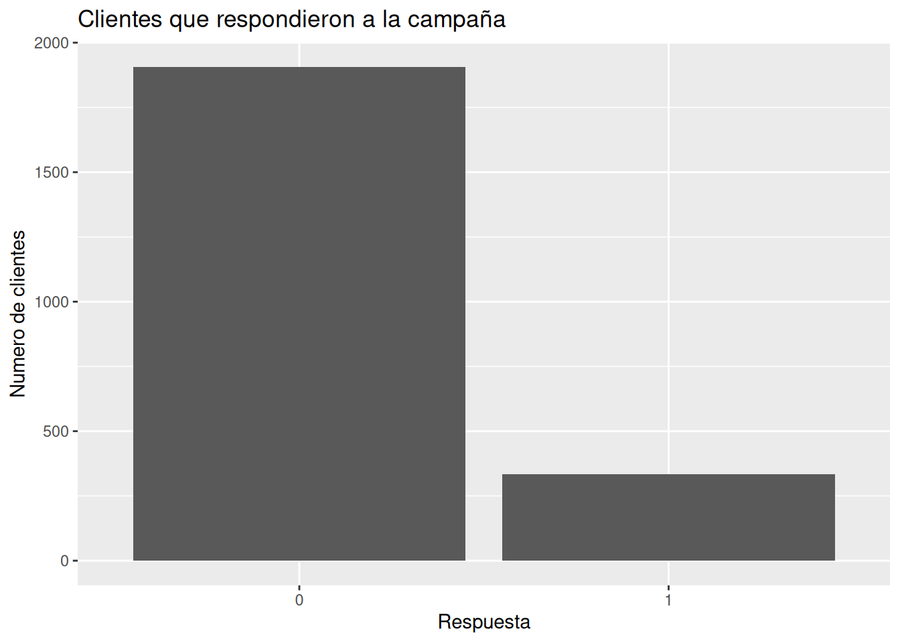
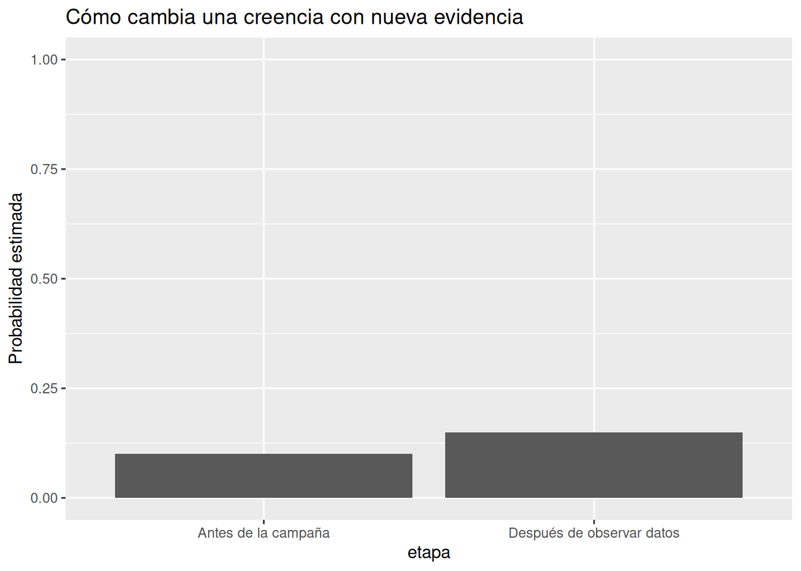

# Cargar la dataset de marketing
marketing <- read_delim(
"../data/marketing_campaign.csv",
delim = ";"
#guess_max = 10000,
#show_col_types = FALSE
)4.- Bayes: aprender de nueva evidencia
Introducción
Vivimos rodeados de incertidumbre.
Un médico recibe un examen de laboratorio y cambia parcialmente su sospecha diagnóstica. Un inversionista lee una noticia económica y ajusta sus expectativas. Una empresa lanza una campaña publicitaria y empieza a preguntarse:
“¿Está funcionando realmente?”
Ninguna de estas personas posee certeza absoluta.
Lo único que tienen es información incompleta.
Y, aun así, deben tomar decisiones.
El pensamiento bayesiano nace precisamente de esta realidad:
aprender a modificar racionalmente nuestras creencias cuando aparece nueva evidencia.
Ese es el corazón de Bayes.
No se trata de alcanzar verdades perfectas. No se trata de eliminar la incertidumbre. Se trata de aprender continuamente.
Pensar bayesianamente sin darse cuenta
Aunque muchas personas consideran a Bayes como una idea matemática compleja, en realidad todos pensamos bayesianamente todos los días.
Imagina esta situación:
- Un amigo normalmente llega puntual.
- Hoy lleva 40 minutos de retraso.
- No responde mensajes.
Tu cerebro automáticamente comienza a actualizar posibilidades:
- quizá hubo tráfico
- quizá olvidó la reunión
- quizá ocurrió algo importante
No tienes certeza.
Pero la nueva evidencia cambia lo que consideras plausible.
Eso es pensamiento bayesiano.
La idea central de Bayes
La esencia de Bayes puede resumirse así:
“Lo que creemos antes puede cambiar cuando aparece nueva información.”
En términos simples:
| Concepto | Traducción intuitiva |
|---|---|
| Prior | Lo que creíamos antes |
| Evidencia | La nueva información |
| Posterior | Lo que creemos ahora |
Bayes no reemplaza nuestras creencias. Las actualiza.
Incertidumbre y aprendizaje
En muchos libros tradicionales, la incertidumbre parece un problema incómodo que debe eliminarse.
El enfoque bayesiano propone algo distinto:
La incertidumbre es una parte natural del mundo real.
En negocios, medicina, economía o marketing:
- nunca tenemos información perfecta
- nunca conocemos el futuro con certeza
- nunca observamos toda la realidad
Por eso necesitamos aprender a pensar probabilísticamente.
No para predecir perfectamente.
Sino para tomar mejores decisiones bajo incertidumbre.
Contexto de negocio
¿Qué es una campaña de marketing?
Antes de usar el dataset, necesitamos entender algunos conceptos básicos.
Las empresas constantemente intentan atraer clientes mediante campañas:
- emails
- promociones
- descuentos
- anuncios
- publicidad digital
El objetivo suele ser simple:
lograr que algunas personas realicen una acción.
Por ejemplo:
- comprar un producto
- suscribirse
- registrarse
- responder una oferta
Cuando una persona realiza esa acción, decimos que ocurrió una conversión.
Conversion rate
Uno de los conceptos más importantes en marketing es el:
Conversion rate
Es simplemente:
el porcentaje de personas que realizaron la acción deseada.
Por ejemplo:
- 100 personas reciben un email
- 20 personas compran
Entonces:
- conversion rate = 20%
Parece sencillo.
Pero aquí aparece el problema real:
Nunca sabemos con certeza si una campaña “funciona”.
Incluso campañas buenas pueden tener malos días.
Y campañas malas pueden parecer exitosas por azar.
Aquí es donde Bayes resulta útil.
Storytelling central del capítulo
Imagina una empresa que lanza una nueva campaña publicitaria.
La empresa cree inicialmente que la campaña podría funcionar “moderadamente bien”.
No tiene certeza.
Sólo tiene expectativas previas.
Ese es el prior.
Luego aparecen los primeros resultados:
- algunos clientes responden
- otros ignoran la campaña
- aparecen nuevas conversiones
Ahora la empresa debe actualizar lo que cree.
Y cada nuevo dato cambia parcialmente sus expectativas.
Eso es exactamente lo que hace Bayes:
aprender continuamente a partir de nueva evidencia.
Introducción visual a Bayes
Supongamos esta situación sencilla.
Una empresa envía una campaña a 100 clientes.
- 20 convierten
- 80 no convierten
La empresa inicialmente pensaba que la campaña probablemente tendría una conversión cercana al 10%.
Pero los primeros resultados parecen mejores.
Ahora surge una pregunta natural:
“¿Debemos actualizar nuestras expectativas?”
La respuesta bayesiana es:
Sí.
Porque la evidencia nueva importa.
Bayes usando frecuencias naturales
Las frecuencias naturales ayudan muchísimo a reducir ansiedad matemática.
En lugar de pensar en símbolos abstractos, pensamos en personas reales.
Por ejemplo:
De 100 clientes:
- 20 compran
- 80 no compran
Ahora imaginemos algo más específico.
Supongamos que:
- muchos clientes que hicieron clic terminaron comprando
- pocos clientes sin clic compraron
Entonces el clic comienza a convertirse en evidencia útil.
No es prueba absoluta.
Pero sí cambia lo que consideramos plausible.
Introducción suave a la fórmula de Bayes
Ahora sí podemos presentar la famosa fórmula.
P(A|B) = P(B|A)P(A) / P(B)
Aunque visualmente parezca intimidante, la idea detrás es sorprendentemente humana.
Podemos leerla así:
P(A): lo que creíamos antes
P(B|A): qué tan compatible es la evidencia con nuestra idea
P(A|B): lo que creemos después de observar evidencia
En palabras simples:
Posterior = evidencia útil / evidencia total
O más intuitivamente:
“La nueva información modifica racionalmente nuestras creencias previas.”
Lo importante NO es memorizar la fórmula
Muchas personas creen que aprender Bayes significa aprender símbolos.
No.
La verdadera idea importante es esta:
las probabilidades pueden cambiar racionalmente cuando aparece nueva evidencia.
Eso es todo.
La matemática sólo organiza esa intuición.
Ejemplo intuitivo con clientes
Supongamos nuevamente:
- 100 clientes reciben una campaña
- 20 compran
Ahora observamos algo interesante:
Entre quienes hicieron clic:
- la mayoría compró
Entonces el clic comienza a actuar como evidencia relevante.
Nuestra creencia cambia:
Antes:
“La campaña probablemente funciona moderadamente.”
Después de observar clics y conversiones:
“Ahora parece más plausible que la campaña funcione bien.”
Notemos algo importante:
No estamos llegando a certeza absoluta.
Seguimos hablando de plausibilidad.
Primer contacto con el dataset real
Ahora conectemos estas ideas con el dataset de marketing.
El objetivo NO será construir todavía modelos complejos.
Queremos desarrollar intuición probabilística.
Preparación inicial
Explorar el dataset
glimpse(marketing) # produce:Rows: 2,240
Columns: 29
$ ID <dbl> 5524, 2174, 4141, 6182, 5324, 7446, 965, 6177, 485…
$ Year_Birth <dbl> 1957, 1954, 1965, 1984, 1981, 1967, 1971, 1985, 19…
$ Education <chr> "Graduation", "Graduation", "Graduation", "Graduat…
$ Marital_Status <chr> "Single", "Single", "Together", "Together", "Marri…
$ Income <dbl> 58138, 46344, 71613, 26646, 58293, 62513, 55635, 3…
$ Kidhome <dbl> 0, 1, 0, 1, 1, 0, 0, 1, 1, 1, 1, 0, 0, 1, 0, 0, 1,…
$ Teenhome <dbl> 0, 1, 0, 0, 0, 1, 1, 0, 0, 1, 0, 0, 0, 1, 0, 0, 1,…
$ Dt_Customer <date> 2012-09-04, 2014-03-08, 2013-08-21, 2014-02-10, 2…
$ Recency <dbl> 58, 38, 26, 26, 94, 16, 34, 32, 19, 68, 11, 59, 82…
$ MntWines <dbl> 635, 11, 426, 11, 173, 520, 235, 76, 14, 28, 5, 6,…
$ MntFruits <dbl> 88, 1, 49, 4, 43, 42, 65, 10, 0, 0, 5, 16, 61, 2, …
$ MntMeatProducts <dbl> 546, 6, 127, 20, 118, 98, 164, 56, 24, 6, 6, 11, 4…
$ MntFishProducts <dbl> 172, 2, 111, 10, 46, 0, 50, 3, 3, 1, 0, 11, 225, 3…
$ MntSweetProducts <dbl> 88, 1, 21, 3, 27, 42, 49, 1, 3, 1, 2, 1, 112, 5, 1…
$ MntGoldProds <dbl> 88, 6, 42, 5, 15, 14, 27, 23, 2, 13, 1, 16, 30, 14…
$ NumDealsPurchases <dbl> 3, 2, 1, 2, 5, 2, 4, 2, 1, 1, 1, 1, 1, 3, 1, 1, 3,…
$ NumWebPurchases <dbl> 8, 1, 8, 2, 5, 6, 7, 4, 3, 1, 1, 2, 3, 6, 1, 7, 3,…
$ NumCatalogPurchases <dbl> 10, 1, 2, 0, 3, 4, 3, 0, 0, 0, 0, 0, 4, 1, 0, 6, 0…
$ NumStorePurchases <dbl> 4, 2, 10, 4, 6, 10, 7, 4, 2, 0, 2, 3, 8, 5, 3, 12,…
$ NumWebVisitsMonth <dbl> 7, 5, 4, 6, 5, 6, 6, 8, 9, 20, 7, 8, 2, 6, 8, 3, 8…
$ AcceptedCmp3 <dbl> 0, 0, 0, 0, 0, 0, 0, 0, 0, 1, 0, 0, 0, 0, 0, 0, 0,…
$ AcceptedCmp4 <dbl> 0, 0, 0, 0, 0, 0, 0, 0, 0, 0, 0, 0, 0, 0, 0, 0, 0,…
$ AcceptedCmp5 <dbl> 0, 0, 0, 0, 0, 0, 0, 0, 0, 0, 0, 0, 0, 0, 0, 1, 0,…
$ AcceptedCmp1 <dbl> 0, 0, 0, 0, 0, 0, 0, 0, 0, 0, 0, 0, 0, 0, 0, 1, 0,…
$ AcceptedCmp2 <dbl> 0, 0, 0, 0, 0, 0, 0, 0, 0, 0, 0, 0, 0, 0, 0, 0, 0,…
$ Complain <dbl> 0, 0, 0, 0, 0, 0, 0, 0, 0, 0, 0, 0, 0, 0, 0, 0, 0,…
$ Z_CostContact <dbl> 3, 3, 3, 3, 3, 3, 3, 3, 3, 3, 3, 3, 3, 3, 3, 3, 3,…
$ Z_Revenue <dbl> 11, 11, 11, 11, 11, 11, 11, 11, 11, 11, 11, 11, 11…
$ Response <dbl> 1, 0, 0, 0, 0, 0, 0, 0, 1, 0, 0, 0, 0, 0, 0, 1, 0,…Objetivo:
- entender variables
- familiarizarse con clientes reales
- comenzar a pensar en incertidumbre
Explorar conversiones
Supongamos que el dataset incluye una variable de respuesta a campañas.
Podemos comenzar calculando proporciones simples.
marketing %>%
count(Response) # produce:# A tibble: 2 × 2
Response n
<dbl> <int>
1 0 1906
2 1 334# Contar las respuestas a la campaña y sacar la proporción
marketing %>%
count(Response) %>%
mutate(
proporcion = n / sum(n)
) # produce:# A tibble: 2 × 3
Response n proporcion
<dbl> <int> <dbl>
1 0 1906 0.851
2 1 334 0.149Aquí todavía no estamos haciendo “estadística avanzada”.
Sólo estamos aprendiendo a observar evidencia.
Visualización simple de conversiones
# Visualización simple de las conversiones
marketing %>%
count(Response) %>%
ggplot(aes(x = factor(Response), y = n)) +
geom_col() +
labs(
title = "Clientes que respondieron a la campaña",
x = "Respuesta",
y = "Numero de clientes"
)
Qué debemos interpretar
La parte importante NO es el gráfico en sí.
La parte importante es la interpretación.
Por ejemplo:
- ¿las conversiones parecen frecuentes o raras?
- ¿la campaña parece prometedora?
- ¿cuánta incertidumbre existe?
- ¿podríamos generalizar estos resultados?
El pensamiento bayesiano siempre pregunta:
“¿Qué tan fuerte es realmente esta evidencia?”
Un error muy común
Un error frecuente en negocios es pensar:
“Si hubo algunas conversiones, entonces la campaña funciona.”
Pero eso puede ser engañoso.
¿Por qué?
Porque:
- muestras pequeñas pueden confundirnos
- el azar puede producir patrones temporales
- necesitamos acumular evidencia gradualmente
Bayes ayuda precisamente a evitar conclusiones exageradas.
Antes y después de nueva evidencia
Una visualización muy útil para este capítulo es comparar:
- creencia inicial
- creencia después de observar datos
Por ejemplo:
# Comparar creencia inicial con creencia después de observar datos
beliefs <- tibble(
etapa = c("Antes de la campaña", "Después de observar datos"),
probabilidad = c(0.10, 0.149)
)
beliefs # produce:# A tibble: 2 × 2
etapa probabilidad
<chr> <dbl>
1 Antes de la campaña 0.1
2 Después de observar datos 0.149# Gráfico de la etapa vs la probabilidad
ggplot(beliefs, aes(
x = etapa,
y = probabilidad
)) +
geom_col() +
ylim(0, 1) + # Para mostrarel gráfico en la escala de 0 a 1 en el
# eje Y
labs(
title = "Cómo cambia una creencia con nueva evidencia",
y = "Probabilidad estimada"
)
Lo profundo del pensamiento bayesiano
Bayes tiene una implicación filosófica muy poderosa:
nadie empieza desde cero.
Todos tenemos:
- experiencia previa
- expectativas
- intuiciones
- creencias parciales
Y eso no es un defecto.
Es inevitable.
La racionalidad no consiste en eliminar creencias previas.
Consiste en:
permitir que la evidencia las modifique.
Prior y posterior en la vida real
Esto ocurre constantemente:
Medicina
Un médico tiene sospechas iniciales antes de pedir un examen.
Luego el examen modifica parcialmente esas sospechas.
Negocios
Una empresa tiene expectativas iniciales sobre una campaña.
Luego los resultados reales cambian esas expectativas.
Vida cotidiana
Las personas actualizan opiniones constantemente.
Bayes simplemente formaliza algo profundamente humano:
aprender de nueva evidencia.
Visualizaciones útiles para este capítulo
A lo largo del capítulo, conviene priorizar gráficos como:
- barras simples
- proporciones
- frecuencias naturales
- comparaciones antes/después
- incertidumbre visible
- distribuciones sencillas
Evitar:
- gráficos excesivamente técnicos
- visualizaciones sobrecargadas
- demasiadas variables simultáneamente
La claridad es más importante que la sofisticación.
Posibles errores de interpretación
Error 1
Confundir probabilidad con certeza
Una probabilidad alta NO significa garantía.
Error 2
Ignorar creencias previas
La evidencia siempre se interpreta dentro de un contexto previo.
Error 3
Sobreinterpretar muestras pequeñas
Pocos datos pueden generar conclusiones engañosas.
Error 4
Pensar que Bayes elimina incertidumbre
No.
Bayes ayuda a navegar incertidumbre.
No a destruirla.
Reflexión bayesiana
Una de las ideas más importantes de este libro es:
cambiar de opinión con nueva evidencia no es debilidad.
Es racionalidad.
Muchas veces las personas sienten que modificar una creencia implica “equivocarse”.
El pensamiento bayesiano propone algo distinto:
las creencias siempre deben ser provisionales.
Porque el mundo cambia.
Y la información también.
Conexión con capítulos futuros
Este capítulo introduce la intuición fundamental:
- prior
- evidencia
- posterior
- actualización de creencias
En los próximos capítulos veremos cómo estas ideas evolucionan hacia:
- probabilidades útiles
- intervalos plausibles
- regresión logística
- forecasting probabilístico
- toma de decisiones bajo incertidumbre
Ejercicios
Ejercicio 1
Actualizar creencias intuitivamente
Imagina:
- una campaña normalmente convierte 5%
- en una prueba pequeña convierte 15%
Pregunta:
- ¿deberías cambiar totalmente tu opinión?
- ¿o sólo parcialmente?
Explica intuitivamente por qué.
Ejercicio 2
Frecuencias naturales
Supongamos:
- 100 clientes reciben una oferta
- 18 compran
Describe la situación usando:
- proporciones
- frecuencias naturales
- interpretación intuitiva
Ejercicio 3
Interpretar evidencia
Una campaña tiene pocas conversiones al inicio.
Después mejora considerablemente.
Pregunta:
- ¿qué podría explicar ese cambio?
- ¿la evidencia inicial era suficiente?
Ejercicio 4
Pequeño experimento en R
Modificar este código:
beliefs <- tibble(
etapa = c("Antes", "Después"),
probabilidad = c(0.15, 0.35)
)y crear distintos escenarios de actualización.
Ejercicio 5
Reflexión conceptual
Explica con tus propias palabras:
“Bayes trata sobre plausibilidad, no sobre certeza absoluta.”